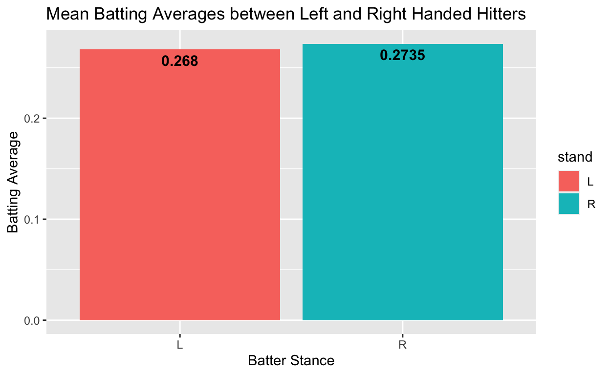
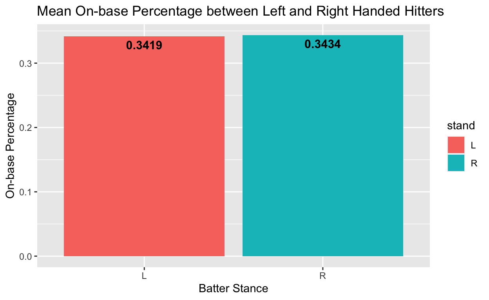
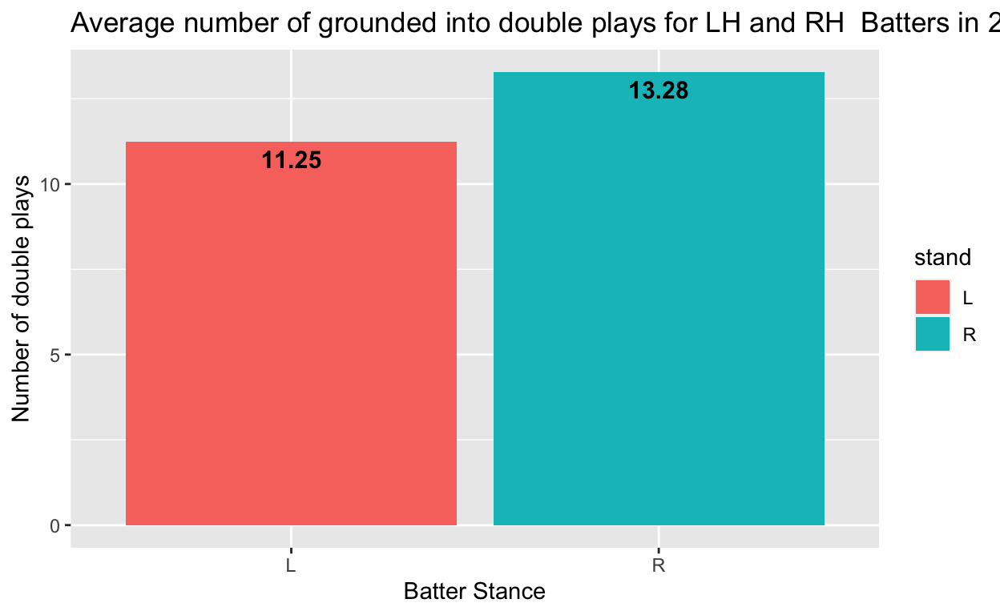
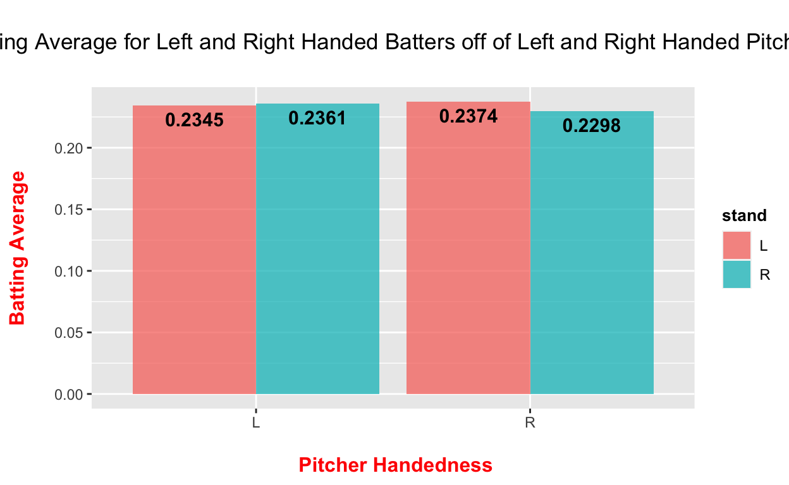
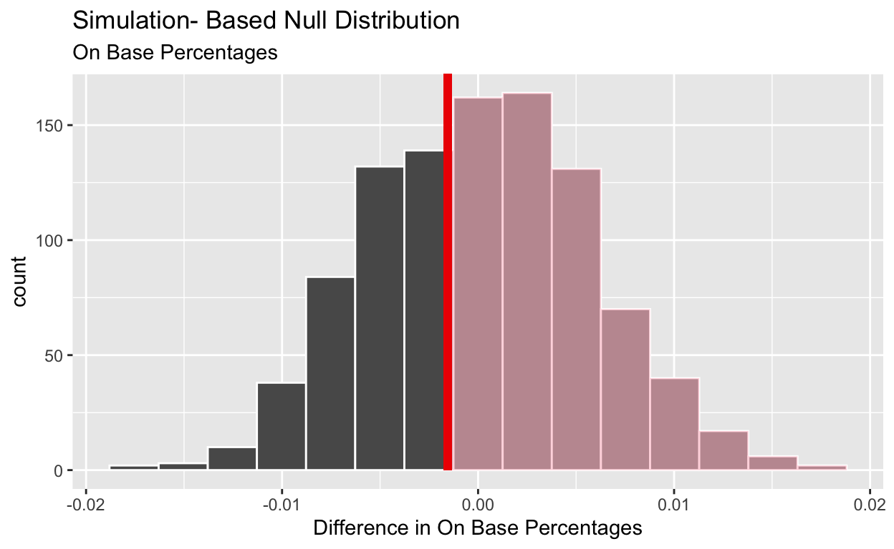
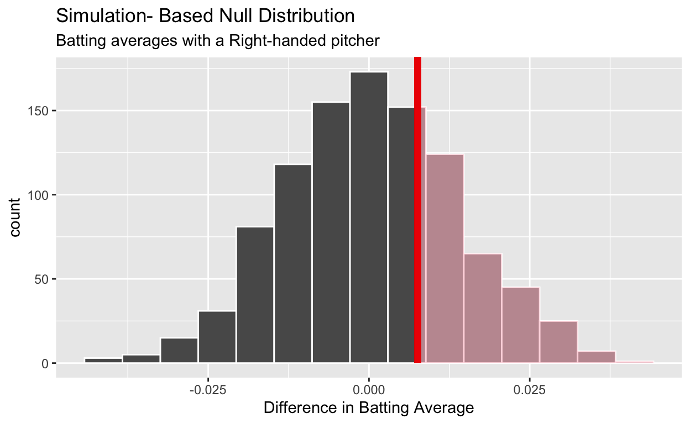
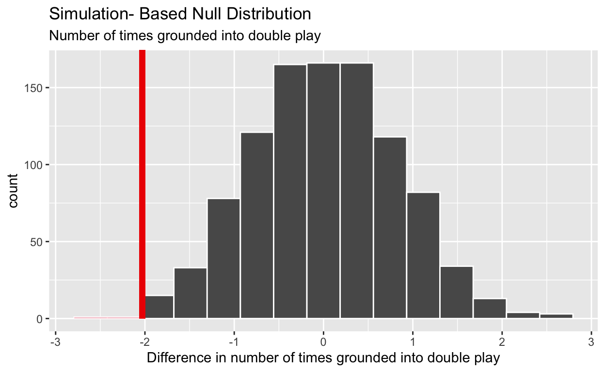

My final project
To what extent are left-handed batters more effective than right handed batters in MLB? Left-handed batters are believed to have 3 big advantages. 1. Because they are closer to 1st base, it is easier for them to out run ground balls and be safe. 2. A majority of MLB pitchers are right handed, and left-handed batters supposedly hit better off of right-handed pitchers. 3. With a runner on first and the second-basemen shifting closer to 2nd to get a double play, it is easier for a left-handed batter to pull the ball in-between the first and second baseman, and actually make it harder for the fielders to make a double play. My hypothesis is that left-handed hitters do not have a higher on-base percentage than right-handed hitters, but that they do hit better off of right-handed pitchers, and are less likely to have double plays made on them with a runner on 1st. I think that the closeness of the left-handed hitters (LHH) to 1st base is offset by the tendency for LH hitters to “pull” the ball to the second-baseman and they have to make a shorter throw. However, I do think that LH batters hit better off of RH pitchers as the ball is easier to hit if its breaking into you and other research studies have supported this. Finally, because hitters have the tendency to pull the ball, I do think the 2nd baseman has a harder time getting a double play from a LH hitter, and thus there will be less double plays with LH hitters.Therefore LH hitters will be somewhat more effective than RH hitters.
The dataset I am going to use is Baseballr is an R package than can be used to analyze baseball data. Baseballr has scaped data from various sources and created an R package so it can easily be used. This data includes box scores, standings, sabermetrics, etc. My explanatory variables of interest are the handedness of batter, Left-handed vs Right-handed, and comparing the metrics between the two groups. My outcome/dependent variables are On-base percentage(OBP), Batting Averages(BA), and the number of times they grounded out into a double play. On Base Percentage is the ratio of that the hitter gets on base(via walks, hits, errors, etc) to their total number of at-bats. I am assuming that the number of walks and errors is randomly distributed among all-types of batters, and that if LH batters had a higher OBP it is because they are more likely to beat out the throw to 1st.Finding no correlation would support my hypothesis. If LH hitters hit better off of RH pitchers(RHP), we’d expect them to have a higher BA(ratio of hits/ At-bats) off of RHP than LHP.Finding a positive correlation in this variable would prove my hypothesis. Finally, if LHH were less likely to be a victim of a double play, they would have less double plays made on them than RHH. Finding a negative relationship between LHH and ground into double plays statistic would support my hypothesis.No correlation between any of the 3 focuses of study or a negative correlation would disprove my hypothesis.
Data section: 2-3 paragraphs + plot visualizing main outcome of interest. (3pts)
I had to merge categorical player specific data such as stance to the 2017 stats dataset.
#stats is a dataset containg all of a hitters statistics during the 2017 season
stats_2017 <- try(mlb_stats(stat_type = 'season', stat_group = 'hitting', season = 2017))|>
rename(player_name = player_full_name)
ids <- stats_2017|>
select(player_id)
#this searches through all of the hitters and finds whether they are left handed or right handed through game by game
stands<- statcast_search("2017-03-31", "2017-10-31", playerid = NULL, player_type = 'batter')|>
select(batter,stand)|>
rename(player_id=batter)
#need to rename batter to player_id so it can be merged with the 2017 dataset later
#because we have game by game data, we only need to count the stance of the player the first time they go up to bat that season and get rid of duplicates.
stand<-unique(stands)
stand<-na.omit(stand)
#adding whether or not the batter is left handed or right handed to the 2017 dataset
#EVEN THOUGH THIS IS ONLY ONE CHUNK OF CODE IT TOOK ME 3 HOURS TO SHUFFLE THROUGH ALL AVAILABLE DATASETS AND FIGURE OUT HOW TO MERGE THEM!
stats_2017 <- stats_2017 |>
left_join(stand,by = "player_id")
stats_2017_na<-na.omit(stats_2017)
stats_2017_na <- stats_2017_na|>
mutate(
stand_numeric= if_else(stand == "L",1,0)
)
stats_2017_na# A tibble: 154 × 61
total_splits season num_teams rank games_played ground_outs
<int> <chr> <int> <int> <int> <int>
1 144 2017 1 1 153 160
2 144 2017 1 2 159 149
3 144 2017 1 3 136 136
4 144 2017 1 4 144 109
5 144 2017 1 5 130 97
6 144 2017 1 6 162 145
7 144 2017 1 7 140 140
8 144 2017 1 8 162 206
9 144 2017 1 9 152 154
10 144 2017 1 9 152 154
# ℹ 144 more rows
# ℹ 55 more variables: air_outs <int>, runs <int>, doubles <int>,
# triples <int>, home_runs <int>, strike_outs <int>,
# base_on_balls <int>, intentional_walks <int>, hits <int>,
# hit_by_pitch <int>, avg <chr>, at_bats <int>, obp <chr>,
# slg <chr>, ops <chr>, caught_stealing <int>, stolen_bases <int>,
# stolen_base_percentage <chr>, ground_into_double_play <int>, …From there, I was able to create simple visualizations to give us a brief overview of the variables I will be examining.
BA_means <- stats_2017_na |>
group_by(stand) |>
summarize(BA = mean(as.numeric(avg), na.rm = TRUE))
ggplot(BA_means, aes(x = stand, y = BA)) +
geom_col(mapping = aes(fill = stand))+
geom_text(aes(label = round(BA,4)), fontface = "bold", vjust = 1.5, position = position_dodge(.9), size = 4)+labs(title = "Mean Batting Averages between Left and Right Handed Hitters", x = "Batter Stance", y= "Batting Average")
obp_means <- stats_2017_na |>
group_by(stand) |>
summarize(obp = mean(as.numeric(obp), na.rm = TRUE))
ggplot(obp_means, aes(x = stand, y = obp)) +
geom_col(mapping = aes(fill = stand))+
geom_text(aes(label = round(obp,4)), fontface = "bold", vjust = 1.5, position = position_dodge(.9), size = 4)+labs(title = "Mean On-base Percentage between Left and Right Handed Hitters", x = "Batter Stance", y= "On-base Percentage")
dbplay_means <- stats_2017_na |>
group_by(stand) |>
summarize(avg_dbplay = mean(ground_into_double_play, na.rm = TRUE))
ggplot(dbplay_means, aes(x = stand, y = avg_dbplay)) +
geom_col(mapping = aes(fill = stand))+
geom_text(aes(label = round(avg_dbplay,2)), fontface = "bold", vjust = 1.5, position = position_dodge(.9), size = 4)+labs(title = "Average number of grounded into double plays for LH and RH Batters in 2017", x = "Batter Stance", y= "Number of double plays")
#now we need to merge yet another dataset, this time we are merging categorical data about the pitcher(whether they are left handed or right handed and adding that to the game by game-dataset)
# a table of all pitchers and whether they threw left handed or right handed
throws <- statcast_search("2017-03-31", "2017-10-31", playerid = NULL, player_type = 'pitcher')|>
select(pitcher,p_throws)|>
rename(pitcher_1=pitcher)
throws<-unique(throws)
throws<-na.omit(throws)
#game by game database of all batters for the 2017 season
batter_db <- statcast_search("2017-03-31", "2017-10-31", playerid = NULL, player_type = 'batter')
#merging database based on pitcher. so now it notes whether the pitcher the batter faced was left handed or right
batter_db<- batter_db |>
left_join(throws,by = "pitcher_1")
#Need to find the batting averages of each player. unfortunately there is no Batting average in this dataset so we need to calculate that ourselves by creating a new binary variable called hit and calculating the average of that
BA_table <- batter_db |>
filter(!events %in% c("walk","hit_by_pitch",""))|>
mutate (
hit = if_else(events %in% c("single","double","triple","home_run"),1,0)
)|>
group_by(stand,p_throws.x) |>
summarize(BA_hand = mean(hit))|>
pivot_wider(
names_from = p_throws.x,
values_from = BA_hand
)pitcher_means <- batter_db |>
filter(!events %in% c("walk","hit_by_pitch",""))|>
mutate (
hit = if_else(events %in% c("single","double","triple","home_run"),1,0)
)|>
group_by(stand,p_throws.x) |>
summarize(BA_hand = mean(hit))
ggplot(data = pitcher_means, aes(x = p_throws.x, y = BA_hand, fill = stand)) +
geom_col(stat = "identity", position = position_dodge(), alpha = 0.75) +
geom_text(aes(label = round(BA_hand,4)), fontface = "bold", vjust = 1.5, position = position_dodge(.9), size = 4) +
labs(x = "\n Pitcher Handedness", y = "Batting Average\n", title = "\n Batting Average for Left and Right Handed Batters off of Left and Right Handed Pitchers \n") +
theme(plot.title = element_text(hjust = 0.5),
axis.title.x = element_text(face="bold", colour="red", size = 12),
axis.title.y = element_text(face="bold", colour="red", size = 12),
legend.title = element_text(face="bold", size = 10))
Through creating bar plots, we can have a basic understanding of how on-base percentage, batting average, and ground into double play rates compare for left handed and right handed batters. Upon first glance, there does not seem to be a significant difference in the batting averages or on-base percentages of Left and Right handed hitters. However, we cannot determine this from the bar plot alone.In order to statistically confirm that there is no significant difference we need to create bootstrap samples and calculate a p-value which I do in the results section. Even though we need to do evaluate the p-values in order to confirm, based on these bar plots alone, I do not predict there to be any significant difference in the batting averages and on-base percentages of left handed and right handed batters.
On the other hand, there does seem to be a larger difference the number of double plays made on LH hitters vs RH hitters. Based on the bar plot, on average, LH hitters ground into less double plays than RH hitters. Once again, we cannot yet determine if there is a significant difference in the average number of double plays without calculating a confidence interval or a p-value, however it is more possible that LH hitters have an advantage over RH hitters in this regard. Similarly, there does seem to be a greater difference in the batting averages of LH hitters and RH hitters when facing a right-handed pitcher. Thus, there may be some merit to the claim that LH hitters hit better off of RH pitchers than RH batters. We need to calculate a p-value to determine if these differences are significant.
Results section: plot of main analysis + regression output + 2-3 paragraphs of description and interpretation of the plots and regression (including interpreting the main coefficient of interest and describing if it is statistically significant and if we should interpret it causally). This section could be longer if you choose to include additional analyses. (8pts)
Average On Base Percentage for LH hitters and RH hitters in the year of 2017
| Left Handed Hitters | Right-Handed Hitters |
|---|---|
| 0.3418971 | 0.3434419 |
#getting the ATE of on base percentage
ate_obp <- obp_chart|>
mutate(
ATE = `L` - `R`
)|>
select(ATE)
#in the datset obp is a character which is annoying so we need to change it to a numeric value
stats_2017_na<- stats_2017_na|>
mutate(
obp_numeric = as.numeric(obp)
)
ate_boots_obp<- stats_2017_na|>
specify(obp_numeric~stand)|>
generate(reps = 1000, type = "bootstrap")|>
calculate(stat = "diff in means", order = c("L", "R"))
null_obp <- stats_2017_na |>
specify(obp_numeric~stand) |>
hypothesize(null = "independence") |>
generate(reps = 1000,type = "permute") |>
calculate(stat = "diff in means", order = c("L", "R"))
obp_ci_95 <- ate_boots_obp|>
get_confidence_interval(level = .95, type = "percentile")
knitr::kable(obp_ci_95)| lower_ci | upper_ci |
|---|---|
| -0.0120504 | 0.0092288 |
p_obp<- null_obp |>
get_p_value(obs_stat = ate_obp, direction = "greater")
knitr::kable(p_obp)| p_value |
|---|
| 0.608 |
null_obp|>
visualize() +
shade_p_value(obs_stat = ate_obp, direction = "greater") + labs(title = "Simulation- Based Null Distribution", subtitle = "On Base Percentages", x = "Difference in On Base Percentages")
As you can see by this table and the p-value, there is very little difference in the average on base percentages for Left Handed Hitters(LH) and Right Handed Hitters(RH), and in fact, on average, RH hitters have a slightly higher on base percentage . This supports my hypothesis that left handed hitters do not have a higher on-base percentage than right handed hitters. Many baseball coaches conject that left handed hitters have an advantage because they are closer to first base and have a better chance at beating the throw to first. If this were true, then we would expect left handed hitters to get on base more and have a higher on-base percentage(OBP). However, this is not the case as LH hitters have almost identical OBPs to RH hitters. This is likely because the bases are 90ft apart, and such a far distance makes any advantage a LH hitter has to beat the throw to first negligible. The results might be different for a sport like softball in which the bases are 60ft apart and an LH hitter’s advantage may be significant, but for baseball it is not.
DO LEFT-HANDED BATTERS HIT BETTER OFF OF RIGHT HANDED PITCHERS THAN RIGHT HANDED BATTERS?
| Batter Stance | LHP | RHP |
|---|---|---|
| L | 0.2344961 | 0.2374256 |
| R | 0.2360992 | 0.2298368 |
Based off the table, LH hitters have a higher batting average off of RH pitchers than RH hitters, but have a lower batting average off of LH pitchers than RH hitters. This gives some insight into the opposite-stance, opposite-pitcher belief in which is thought that batters hit better off of pitchers who throw with the opposite hand because they can see the ball better. For instance, LH batters hit better off of RH pitcher and RH batters hit better off of LH pitcher. We need to run a significance test to determine whether the data supports that belief.
BOOTSTRAPPING TO DETERMINE SIGNIFICANTate_pitcher <-batter_db |>
filter(!events %in% c("walk","hit_by_pitch",""))|>
mutate (
hit = if_else(events %in% c("single","double","triple","home_run"),1,0)
)|>
group_by(stand,p_throws.x) |>
summarize(BA_hand = mean(hit))|>
pivot_wider(
names_from = stand,
values_from = BA_hand
)|>
mutate(
ATE = `L` - `R`
)|>
select(p_throws.x,ATE)
knitr::kable(ate_pitcher, col.names = c("Pitcher Handedness", "ATE"))| Pitcher Handedness | ATE |
|---|---|
| L | -0.0016031 |
| R | 0.0075888 |
library(infer)
set.seed(02138)
ate_RHP <- ate_pitcher[2,]|>
select(ATE)
BA_db_rhp<-batter_db |>
filter(p_throws.x== "R")|>
filter(!events %in% c("walk","hit_by_pitch",""))|>
mutate (
hit = if_else(events %in% c("single","double","triple","home_run"),1,0)
)
ate_boots_pitcher<- BA_db_rhp|>
specify(hit~stand)|>
generate(reps = 1000, type = "bootstrap")|>
calculate(stat = "diff in means", order = c("L", "R"))
null_pitcher <- BA_db_rhp |>
specify(hit~stand) |>
hypothesize(null = "independence") |>
generate(reps = 1000,type = "permute") |>
calculate(stat = "diff in means", order = c("L", "R"))
pitcher_ci_95 <- ate_boots_pitcher|>
get_confidence_interval(level = .95, type = "percentile")
knitr::kable(pitcher_ci_95)| lower_ci | upper_ci |
|---|---|
| -0.0183303 | 0.0340138 |
p_pitcher<- null_pitcher |>
get_p_value(obs_stat = ate_RHP, direction = "greater")
knitr::kable(p_pitcher)| p_value |
|---|
| 0.295 |
null_pitcher|>
visualize() +
shade_p_value(obs_stat = ate_RHP, direction = "greater") + labs(title = "Simulation- Based Null Distribution", subtitle = "Batting averages with a Right-handed pitcher", x = "Difference in Batting Average")
Based on the confidence interval containing 0 and the p-value of .291, there is not enough evidence to reject the null, and therefore, we can conclude that there is not sufficient evidence to support that Left-handed batters hit better off of right-handed pitchers than right-handed batters.
DO LEFT HANDED HITTERS HAVE LESS DOUBLE PLAYS?
Finally, if LHH were less likely to be a victim of a double play, they would have a higher BA with a runner on 1st and less than 2 outs than RHH. Finding a positive correlation between LHH and BA with runner on 1st and less than 2 outs would support my hypothesis. No correlation between any of the 3 focuses of study or a negative correlation would disprove my hypothesis.
double_play <-stats_2017_na|>
group_by(stand)|>
summarize(db_mean = mean(ground_into_double_play)) |>
pivot_wider(
names_from = stand,
values_from = db_mean
)
knitr::kable(double_play, col.names = c("LHH","RHH"))| LHH | RHH |
|---|---|
| 11.25 | 13.27907 |
BOOTSTRAPPING TO DETERNMINE SIGNIFICANT DIFFERENCE
Using stat_2017 data
ate_dbstat <- stats_2017_na|>
group_by(stand)|>
summarize(db_mean = mean(ground_into_double_play)) |>
pivot_wider(
names_from = stand,
values_from = db_mean
)|>
mutate(
ATE = `L` - `R`
)|>
select(ATE)
ate_boots_dbstat<- stats_2017_na|>
specify(ground_into_double_play~stand)|>
generate(reps = 1000, type = "bootstrap")|>
calculate(stat = "diff in means", order = c("L", "R"))
null_dbstat <- stats_2017_na |>
specify(ground_into_double_play~stand) |>
hypothesize(null = "independence") |>
generate(reps = 1000,type = "permute") |>
calculate(stat = "diff in means", order = c("L", "R"))
dbstat_ci_99 <- ate_boots_dbstat|>
get_confidence_interval(level = .99, type = "percentile")
dbstat_ci_99# A tibble: 1 × 2
lower_ci upper_ci
<dbl> <dbl>
1 -4.32 0.0257p_dbstat<- null_dbstat |>
get_p_value(obs_stat = ate_dbstat, direction = "left")
p_dbstat# A tibble: 1 × 1
p_value
<dbl>
1 0.002ate_boots_dbstat|>
visualize()null_dbstat|>
visualize() +
shade_p_value(obs_stat = ate_dbstat, direction = "left") + labs(title = "Simulation- Based Null Distribution", subtitle = "Number of times grounded into double play", x = "Difference in number of times grounded into double play")
I took a bootstrap for this data, as the database only covers data from the 2017 season. To estimate the ATE throughout all seasons we need to bootstrap and examine if there is a significant difference in means.The 99% confidence interval does not contain 0 which means that it is possible for there to be a significant difference in the number of times a batter grounds out to first base given that they are left handed or right handed. This is further supported by our very low p-value of .003 which is less than alpha .01, thus we can reject the null hypothesis . Therefore, there is evidence to support that left handed hitters are less likely to be victim to double plays.
RUNNING A LINEAR REGRESSION
stats_2017_na <- stats_2017_na |>
mutate(stand_numeric = if_else(stand == "L", 1, 0))
regression <- lm(avg ~ stand+plate_appearances, data = stats_2017_na)
var_labels2 <- c(
"(Intercept)" = "Avg. BA of LHH",
"standR" = "RHH",
"plate_appearances" = "Plate Appearances"
)
modelsummary::modelsummary(regression,
statistic = c("s.e. = {std.error}",
"p = {p.value}"),
coef_map = var_labels2,
gof_map = c("nobs", "r.squared", "adj.r.squared"))| (1) | |
|---|---|
| Avg. BA of LHH | 0.214 |
| s.e. = 0.023 | |
| p = <0.001 | |
| RHH | 0.005 |
| s.e. = 0.004 | |
| p = 0.266 | |
| Plate Appearances | 0.000 |
| s.e. = 0.000 | |
| p = 0.016 | |
| Num.Obs. | 154 |
| R2 | 0.047 |
| R2 Adj. | 0.035 |
The main coefficient of interest in this study is stand which represents whether the batter is left handed or right handed. When calculating the regression, based on the table, you can see that on average, right handed hitters have a batting average .005 points more than left-handed hitters when controlling for plate appearances. However, this difference is not statistically significant as the p-value is .226, therefore we cannot interpret it causually and there is not enough evidence to determine that left-handed hitters have an advantage.
obp_chart <- stats_2017_na|>
group_by(stand)|>
summarize(obp_mean = mean(obp_numeric)) |>
pivot_wider(
names_from = stand,
values_from = obp_mean
)
obp_chart # A tibble: 1 × 2
L R
<dbl> <dbl>
1 0.342 0.343fit_obp<- lm(obp_numeric ~ stand + plate_appearances, data = stats_2017_na)
var_labels <- c(
"(Intercept)" = "Avg. OBP of LHH",
"standR" = "RHH",
"plate_appearances" = "Plate Appearances"
)
modelsummary::modelsummary(fit_obp,
statistic = c("s.e. = {std.error}",
"p = {p.value}"),
coef_map = var_labels,
gof_map = c("nobs", "r.squared", "adj.r.squared"))| (1) | |
|---|---|
| Avg. OBP of LHH | 0.274 |
| s.e. = 0.028 | |
| p = <0.001 | |
| RHH | 0.001 |
| s.e. = 0.006 | |
| p = 0.869 | |
| Plate Appearances | 0.000 |
| s.e. = 0.000 | |
| p = 0.015 | |
| Num.Obs. | 154 |
| R2 | 0.039 |
| R2 Adj. | 0.026 |
When running a regression to examine whether there is a significant difference between the on base percentages of LH hitters and RH hitters there is evidence that there is no significant difference. On average, a right handed hitter has an on-base percentage .002 points higher that a LH hitter, but that difference is not statistically significant as the p-value is .783.
fit_dbplay <- lm(ground_into_double_play ~ stand+stolen_bases, data = stats_2017_na)
var_labels3 <- c(
"(Intercept)" = "Avg. # grounding into double play LHH",
"standR" = "RHH",
"stolen_bases" = "Stolen Bases"
)
modelsummary::modelsummary(fit_dbplay,
statistic = c("s.e. = {std.error}",
"p = {p.value}"),
coef_map = var_labels3,
gof_map = c("nobs", "r.squared", "adj.r.squared"))| (1) | |
|---|---|
| Avg. # grounding into double play LHH | 12.399 |
| s.e. = 0.670 | |
| p = <0.001 | |
| RHH | 2.248 |
| s.e. = 0.791 | |
| p = 0.005 | |
| Stolen Bases | −0.137 |
| s.e. = 0.038 | |
| p = <0.001 | |
| Num.Obs. | 154 |
| R2 | 0.115 |
| R2 Adj. | 0.103 |
In order to better determine whether the results were statistically significant I controlled for plate appearances and caught stealing.A player’s speed could be a confounding variable as the faster a player is the less likely they are to ground out into a double play. Unfortunately, a players speed is not in this database, so I had to approximate using stolen bases as a player’s speed heavily influences how many bases a player steals in a season. It is interesting that even when controlling for these variables the results were still statistically significant and, on average,left handed hitters grounded into less double plays than right handed hitters. Even though there is enough evidence to reject the null hypothesis, we still cannot assume causality. Causality can only be proven through an experiment not an observational study.
| ## CONCLUSION |
| To summarize, the differences in average on base percentages between Left Handed hitters(LH) and right handed hitters is not significantly different, and in fact RH hitters have a slightly higher OBP than LH hitters. This supports my hypothesis that there is no significant difference in the mean OBP most likely because the bases in baseball are 90 ft apart which is far enough to make the advantage of LH hitters having an extra step to the base negligible. Additionally, there were no significant differences in the mean batting averages of LH hitters and RH hitters when hitting against a RH Pitcher. This does not support my hypothesis and actually debunks the belief that LH hitters have an advantage because they hit better off of RH pitchers and most pitchers in the MLB are right handed. While the average batting average for LH hitters off of RH pitchers is a little higher, giving some merit to this belief, ultimately the difference is not statistically significant. Finally, on average, LH hitters grounded out into a double play less than RH hitters. Also, the difference in the average number of times an LH batter vs a RH batter grounds out into a double play is statistically significant with a p- value less than .01. This gives us evidence to reject the null hypothesis that there are no difference in means and supports my hypothesis that being closer to first base makes a difference on not grounding out into a double play. The limitations of this analysis are that the data is only from the 2017 season. Though I tried to estimate the average difference in means in other seasons through bootstrapping, it is less accurate because I only used one sample. On a similar note, having baseball statistics in r is a fairly new technology and there aren’t usable datasets before 2014. It is possible that including statistics from more seasons might change the results of the study. As previously mentioned, some confounding variables that may threaten the inference are the speed and experience of the player. If the player is faster, they might have a significantly higher OBP and/or ground into less double plays. A player’s experience(seasons played in the MLB) may also be a confounding variable as rookie batters may perform less than veterans. Also, over time players may get better and consequently have better batting averages and OBPs the more years they have been playing in the league and facing the same pitchers. To improve my analysis, I would use statistics from multiple seasons and also merge the dataset with a dataset that contains the speeds and experience of all the players. Having a larger sample size would increase the reliability of my analysis to generalize to the population. Also by merging the datasets I could control those variables and/or examine the relationship between them. |
FINAL PROJECT RUBRIC
Introduction: describe the research question and main hypothesis; describe why it is important. (1-2 paragraphs) (2pts)
Data section: 2-3 paragraphs + plot visualizing main outcome of interest. (3pts)
Results section: plot of main analysis + regression output + 2-3 paragraphs of description and interpretation of the plots and regression (including interpreting the main coefficient of interest and describing if it is statistically significant and if we should interpret it causally). This section could be longer if you choose to include additional analyses. (8pts)
Conclusion section: 1 paragraph (i) summarizing results and assessing the extent to which you find support for your hypothesis; (ii) describing limitations of the analysis and threats to inference (missing data, confounding, etc), and stating how you could improve your analysis if you had more time/money. (2pts)